svm以及logistic回归都是基于感知机发展出来的，三者都是线性分类器（线性分类器通常是要学习出一个超平面，然后用它进行新数据的预测）。
感知机分类模型选超平面时，其实有很多种选择，但如何确定最佳超平面？我们认为数据点应该尽量远离超平面或决策边界，因为如果数据点距离决策边界很近，决策边界的一点点改动，都会造成一些数据点的预测类别改变，这是不稳定的。
例如，下图中的所有虚线做分类线都能将红色圆点和绿色加号完全分开，但直观上会觉得距离两类数据点距离都最远的蓝色虚线是最佳分类线选择，其对于新数据的预测分类的正确性要比其他虚线的高。
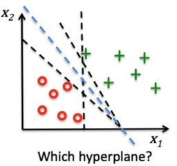
总结一下，对一个数据点进行分类，当超平面离数据点的“间隔”越大，分类的可靠性也越大。因此我们需要让所选择的超平面能够最大化这个“间隔”值。那这个“间隔值”到底是什么？又如何去最大化？先来看看间隔值如何定义。
两个间隔定义
1. 函数间隔（functional margin）
在超平面 w*x + b = 0 确定的情况下，| w*x + b | 能够表示点 x 距离超平面的远近（根据点到面距离公式知此为分子），而通过观察 w*x + b 的符号与标签 y 的是否一致可判断分类是否正确。即可以用 y*(w*x + b) 的正负来判定分类的正确性。
定义超平面关于训练集中某一点 (x(i)，y(i)) 的函数间隔
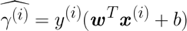
超平面关于训练集的函数间隔 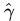)，则为超平面关于训练集中所有点(x(i)，y(i)) 的函数间隔的最小值
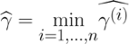 （n为样本数）
上式也说明了，当衡量一个平面到数据集的“远近”时，其实只需要看样本点中距离最近的点。
假设现在要最大化函数间隔，你会发现当等比例放大 w，b 时，函数间隔的确变大了，成了原来的两倍
但超平面没有变化（2w*x + 2b = 0 ⟺ w*x + b = 0），即对数据分类（预测结果）没有任何改变。为了排除这种仅数值变化而非超平面优化的“变化”，需要换一种“间隔”定义。
2. 几何间隔（geometrical margin）
假定对于一个点 x(i) ，令其垂直投影到超平面上的对应点为 x(i)0 ，w 是超平面的法向量，𝛄(i)为样本 x(i) 到超平面的距离，如下图（a）所示：
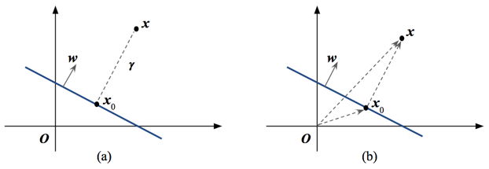
根据图（b）向量关系 Ox = Ox0 + x0x 可得 x 和 x0 关系
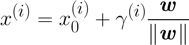
已知x0是超平面上的点，并将上式两边同乘以 wT，得
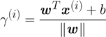
为了使“间隔”是个非负数，对𝛄乘上标签y，则得到超平面关于该点的几何间隔
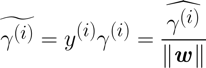
超平面关于训练集的几何间隔，则为超平面关于训练集中所有点(x(i)，y(i)) 的几何间隔的最小值
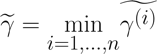
为什么最大化“间隔”用的是几何而非函数间隔：
同等程度缩放 w，b 时，函数间隔产生的变化仅为数值变化而非超平面的变化，而几何间隔不会变化，因为它只随超平面的变化而变化。
例如，将 w，b 放大2倍，函数间隔也被放大两倍（数值变化），但几何间隔不变（超平面不变，点到面距离也不变），所以当优化的是几何间隔时，这种超平面没变化的（数值）变化其实是无效、无变化的。
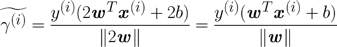
总结：
1）数据正确分类时，该点的函数间隔就是 | w*x + b |，该点的几何间隔就是 | w*x + b |/ ||w|| ， 即点到超平面的距离。
2）我们开头所说的“要找具有最大间隔的超平面”中的“间隔”指的是几何间隔，也就是最大化（训练集中离超平面最近的点的）点到面距离。
接下来，我们就来构建一个最大间隔分类器来实现学习策略。
最大间隔分类器
我们假设数据是严格线性可分的，按照上面所说可以得到优化目标：
约束条件为
根据之前的分析，同等程度缩放 w，b 时，函数间隔变化对几何间隔无影响。为了求解方便，这里将函数间隔规定等于 1，即离超平面最近的那些点的函数间隔为 1，则优化目标变成：
上述优化目标的几何意义如下图。我们称函数间隔 y*(w*x + b) = 1 的点，即下图中位于平面 w*x + b = 1 或 w*x + b = -1 上的点，为支持向量（support vector）。
- 所有支持向量的函数间隔
y*(w*x + b) = 1 - 所有非支持向量的函数间隔
y*(w*x + b) > 1
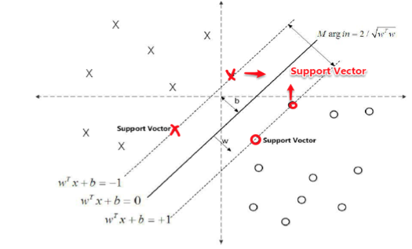
接下来，我们将上述优化目标做数学形式的变换
这是一个含约束的凸二次规划问题，按书上所说可以直接使用现成的优化计算包（QP 优化包）求解。但是为了更进一步研究 SVM，一般我们将此问题继续变换为其对偶问题并进行求解，原因如下：
- 对偶问题更容易求解
- 对偶问题的求解中出现了向量内积的形式，从而引入核函数，推广到非线性分类问题。
有约束的优化问题 —- 拉格朗日乘子法
拉格朗日乘子法和 KKT 条件都是为了求解有约束的优化问题。通过给每个约束条件乘上一个拉格朗日乘子 𝞪，把原来的有约束的优化问题转化为了无约束的优化问题（约束条件隐式地包含在这个无约束的优化问题中）。其中“约束”可分为等式约束和不等式约束。对于含不等式约束的问题，我们需要 KKT 条件（求极值的必要条件）进行求解。即优化问题大致分为以下情况：
1. 无约束优化问题，只需函数对每个变量求导并等于 0（求极值）后求解
2. 只含等式约束的优化问题
求解时要构造拉格朗日函数，λ 为拉格朗日乘子
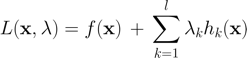
通过拉格朗日函数对各个变量 x，λ 求偏导并令其为零（最优解的必要条件），求解
得到的解为可能极值点，还需要带入原函数进行验证求最优解。
3. 只含不等式约束的优化问题
写出拉格朗日函数
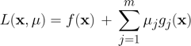
通过 KKT 条件（极值的必要条件）求解，
（ x* 是最优解 ）
4. 同时包含等式和不等式约束的优化问题
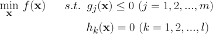
求解时也要构造拉格朗日函数
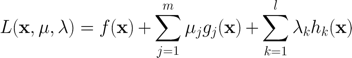
通过 KKT 条件求解（x 最优解的必要条件）
回到 SVM 推导。根据上面的一般理论，SVM 中的优化问题可以写成如下拉格朗日函数
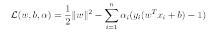
上式中，第一部分是优化目标（objective），第二部分是约束条件（constraints）。
进一步地，若我们定义
则原优化问题可以写成拉格朗日函数形式：
简单证明一下，为什么上式成立。首先明确，构造的新优化问题是：最小化【拉格朗日函数的最大值】。对于内层问题 —— 最大化拉格朗日函数：
- 若约束条件满足，即
y*(w*x + b) - 1 ≥ 0时，由于𝞪 ≥ 0，拉格朗日函数右边相当于非负数减去非负数，则当函数的第二部分为0时（即只剩原优化目标），函数取最大值。 - 若任一约束条件不满足时，只要选参数
𝞪 → +∞，拉格朗日函数可以最大化为正无穷，但无法得到优化目标的最小值（无穷大肯定比（1）中结果大，所以这部分计算无意义）。
所以，对于内层问题，原约束条件 y*(w*x + b) - 1 ≥ 0 相当于解的可行域，优化只能在可行域上求解（即约束条件“隐藏在”了新优化问题中）。求解原优化问题。该分析过程如下：
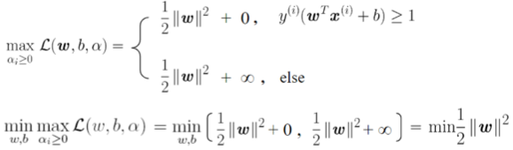
注意：用拉格朗日乘子法时，相关的约束和求解问题都要与原理论相对应：
这里的不等式条件是“≥”，而KKT条件中不等式符号与之相反，所以这里加入一个负号
拉格朗日函数一般推导求解的是含约束的 最小化 问题
对偶问题
即使有了 KKT 条件去求该优化问题依旧比较复杂，有时转成其偶问题后求解则变得容易很多，先来看看原问题的对偶问题。原优化问题是最小化 𝛉(w)
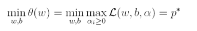
首先，对任意 w，b，要找到一个 𝞪，使得拉格朗日函数都有最大值，最大值即对其它 𝞪’ ≥ 0 ，有
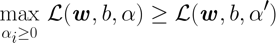
由于对任意 w，b 上式都成立，为了消除 w，b，（找到合适的 w，b ）使不等式两边取最小值
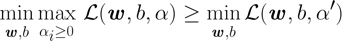
又由于对任意 𝞪’ ≥ 0 上式都成立，为了消除 𝞪’，（可以找到合适的 𝞪’）使不等式右边取最大值
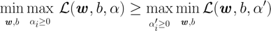
至此，我们将原优化问题（极小极大）变成求解其对偶问题（极大极小）。不等式是一个弱对偶问题，取等号时变强对偶问题。数学上，凸二次规划问题 + Slater 条件就可以得到强对偶性，满足强对偶性一定会满足 KKT条件（必要条件），这样我们便可以使用KKT条件来求解原问题的强对偶问题。
求解对偶问题
上面已经证明了强对偶问题的最优值满足 KKT 条件，接下来利用该条件求解最优值
1）先求 L 对 w，b 的极小，
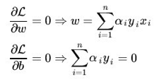
代入 L 得只含 𝞪 的式子
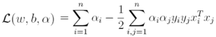
具体推导过程如下：参考这里
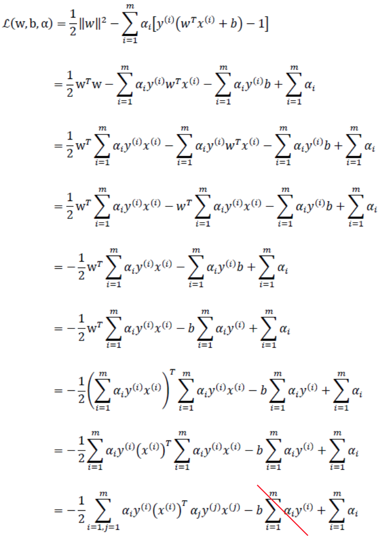
倒数第三到第二步中 𝞪i 和 y(i) 都是数值，因此转置无影响，倒数第二到最后一步中，使用了乘法运算法则 (a + b + c + … ) (a + b + c + … ) = aa + ab + ac + ba + bb + bc + …
2）再求 L 对 𝞪 = { α1 , α2 , … , αn } 的极大。具体计算通过 SMO 算法 完成。
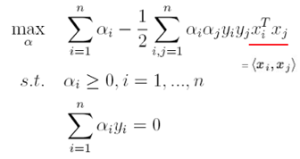
3）有了 𝞪 就能计算出 w，b
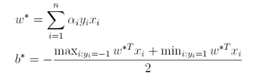
最终得到超平面函数
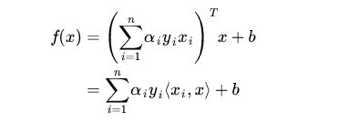
重点：上式表明，给定新数据进行预测，只需要求它与支持向量的内积。这是因为对于非支持向量，由于其对应的拉格朗日乘子 𝞪i 一定为 0。
为什么？我们需要最大化拉格朗日函数，为满足这一要求，第二部分要等于0。
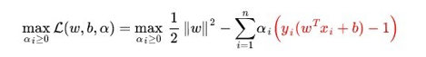
- 对于支持向量有
y*(w*x + b) - 1 = 0（因为函数间隔为 1），满足要求。 - 对于非支持向量有
y*(w*x + b) - 1 > 0，则当且仅当 αi = 0 （αi ≥ 0）时，满足要求。
因此，第二部分拉格朗日乘子和约束必有一者为 0。这也就说明了，SVM 中只有离超平面最近的点（这里就是支持向量）有决定力和影响力。
总结
上面的内容都是再介绍硬间隔 SVM：对于严格线性可分的数据集，学习策略是硬间隔最大化，用最大间隔分类器来实现，这一问题可通过 “有约束的优化 → 无约束的优化 → 对偶问题” 一系列数学转变后进行求解
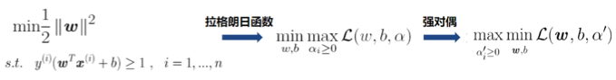
训练好模型（得到超平面）后，预测数据 (x , y) 时，只要代入训练好的函数中，根据结果的正负进行分类。这一点和感知机的预测方式相同。
线性可分 → 线性不可分
上述过程所求的超平面只能解决线性可分的问题，即硬间隔SVM。当数据集不能使用硬间隔SVM完美分类时，我们视不同情况有两种解决办法：
- 软间隔 SVM：数据集并非是非线性的，误分类点是 outliers，在超平面附近且数量较少时。
- 升维（低维映射到高维）：数据集是非线性的，线性分类器无法很好分类，产生的误分类点很多。
先来看第二种，SVM如何处理非线性数据
一般地，解决线性不可分问题时，常常通过提升维度，将低维原始空间映射到高维特征空间，使数据集在高维空间中线性可分，从而使用线性学习器分类。如果原始空间为有限维，那么总是存在一个高维特征空间使得样本线性可分（这一定理支持了非线性支持向量机的可行性）。
举个升维的简单例子：
图中的数据集本身就是非线性的，线性分类不可行，使用一个椭圆分类比较好（如图中的灰色椭圆虚线）。
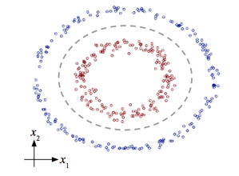
我们设定横坐标为 x1 ，纵坐标为 x2 ，这条非线性分隔线的函数为：
现在，令 并构建新坐标系 Z = (z1 , z2 , z3 , z4 , z5 ) ，我们会得到一个5维的映射空间，而原来特征空间只有2维 (x1 , x2) 。在这新的5维空间中，分隔函数变为：
此时高维特征全是一次项，是一个超平面。在此例中，通过 x 到 z 映射，数据升维，成功地将非线性转为线性问题。
对于硬间隔SVM ：若 ∅ 代表一个映射，在特征空间中的超平面函数变为：
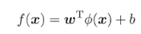
求解方法与之前一样，先写出对应的拉格朗日函数，转成求解对偶问题
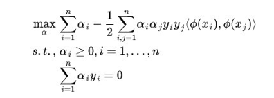
求出 𝞪，w，b 后可得映射后高维空间的超平面函数
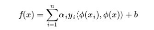
看似好像是这么一回事：对于非线性数据，找一个映射，然后把原来的数据映射到新空间中，再做线性 SVM 即可，求解过程只涉及 高维特征空间中的内积运算 。问题来了：特征空间的维数可能会非常大，甚至可能出现无穷维，根本无法进行内积运算。
我们先尝试一下上面映射后的内积运算：
假设一般二次多项式情况，我们有一个数据集特征分布在d 维空间， 是其特征维度。按照以下映射，将特征升维
则高维空间中的内积为
计算量是 O (d2) ，当 d 维度很高，运算量会很可怕。注意：映射内积中的 xi 是向量 xi = ( x1 , … , xd )，求和符号里的是标量相乘， x 指的是向量 x 中的每一个特征 xi 。
上式进一步转换：
等价于
这里等式右边的 xi ・xj 是向量内积。上式说明了：映射后高维向量内积可以通过低维向量内积 xi ・xj 计算，计算量变成 O (d) ，大大降低了。
核函数 Kernel
按照上面分析，我们定义一个核函数
其中 𝚽 (x) 则为映射函数。这样，我们在学习和预测中只使用 𝜅 ( xi ・xj )，而非显式计算 𝚽 (x)，但达到的效果一致。这样，核函数成为解决升维所引起的维度灾难的一种方法。
引入核函数后，对偶问题变成
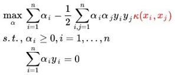
超平面函数变成
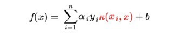
由上式可知核函数直接影响超平面，是影响分类器性能的重要因素之一。选择合适的核函数，才能使数据映射到合适的高维空间中。首先，选择核函数前需要验证核函数的 有效性。
核函数的有效性
给定函数𝜅，能否使用它来替代计算映射的内积 𝚽 (xi)・𝚽 (j)，或是使定义 成立的映射 𝝓 是否存在？
Mercer定理： 设 （从两个 n 维向量映射到实数域），
核函数有效 ⇔ 对于任何 X = { x(1) , x(2) , … , x(m) } ，核函数对应的核矩阵必须是对称且半正定的。
重点：由于核函数是由映射函数内积而成，因此它是一个对称函数，其核矩阵也是对称的。只要核矩阵也是半正定的，那么核函数是有效的，即一定可以找到一个与之对应的映射 𝝓 （使得核函数定义成立）。
核函数的选择
虽然知道了什么样的核函数有效，但自己构造还是很麻烦的。万幸，有以下几个有效核函数可以使用：
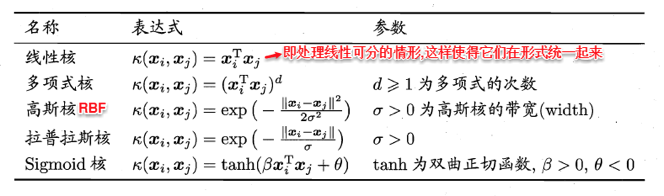
在 sklearn 中核函数的定义（超参数有所改变）【截图： sklearn 官方文档】
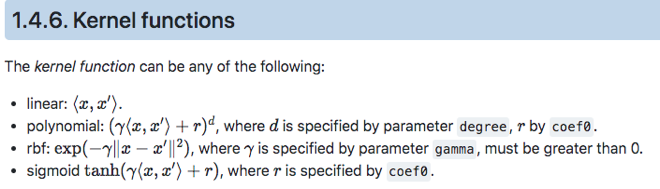
其中，高斯核（Radial Basis Function Kernel， RBF），又称 径向基函数，对应 无限维度 特征映射函数。
sklearn 中的 γ 其实就是高斯函数中的 ½ * σ2 。根据推导，带高斯核的 SVM 的分类函数，相当于 n 个高斯函数的线性组合，每个高斯函数的中心都是 SV，所以每个 SV 的高斯分布都影响最终的分类面。下图是 γ 变化（1，10，100）对应的分类效果【截图：台大林轩田《机器学习技法》课程】
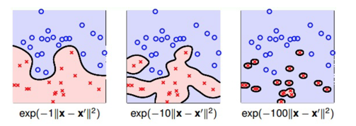
- γ 越小，σ2 越大，即分布越宽时，每个分布容易重叠融合在一起，模型越简单；
- γ 越大，σ2 越小，即分布越窄时，容易出现独立边界，模型越复杂。
对比三种核
线性核（Linear Kernel）
简单快速
当数据线性不可分时就不能使用了
多项式核（Polynomial Kernel）
优于线性核，可以处理非线性数据
当阶数 d 过高时，κ ( . ) 数值范围很大
超参数有三个，不容易确定
高斯核（Radial Basis Function Kernel）
模型更加复杂多样，并且超参数只有一个
模型过于复杂时，易过拟合。
总结
为什么 SVM 要用核函数？
- 遇到非线性数据集，一般地，使用升维方法将数据映射到高维空间中，使其变得线性可分。
- 但是，当映射后的空间维度很高甚至无限时，会引发维度灾难。在SVM中，求解超平面时需要用到（数据）向量内积，若直接在高维空间求解高维向量的内积，会非常复杂。
- 使用核函数可以避免直接在高维空间中进行计算。它虽然也是将特征升维，但先在低维上计算，而分类效果表现在了高维上（低维计算，高维表现）。
SVM 如何使用核函数？
- SVM中先定义核函数表示的是向量映射后的内积（因为SVM分类函数要用到内积，所以这么定义方便计算）。
- 有了定义，当我们选择某个具体形式的核函数（高斯核、多项式核），只需要将输入空间的样本带进具体核函数进行运算，得到的结果我们认为就是映射后的高维向量内积结果（ mercer定理支撑：当你选择的是对称函数且构成的矩阵是半正定的，则其为有效核函数 ⇒ 一定存在映射使核函数的定义成立，即核函数计算结果就是映射后内积 ）
【注】kernel，内积，相似度可以说是同一种东西，kernel 定义为映射的内积，内积可以衡量两个向量相似度。
软间隔 SVM
回到之前的问题，当硬间隔 SVM 不能完美地将数据集分离，当数据集本身是非线性时，我们可以采用升维和核函数来解决。而对于由 outliers（少量异常点，如噪声数据）引起的线性不可分，用软间隔 SVM 解决。
软间隔 SVM 学习策略：
- 允许某些数据点不满足约束
y*(w*x + b) ≥ 1 - 不满足约束的数据要尽可能少
对于不满足约束的点所引起的损失也要尽可能的小，因此，原来的优化问题变成
这里的损失函数一般会选择与距离相关的（可导） hinge 损失（若选择 0/1 损失是阶跃函数，不可导）
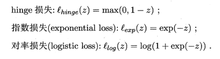
其函数图像为（横坐标为 z，纵坐标为 loss 值）
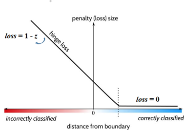
此时优化问题变成（ C 是一个超参数，控制优化目标中的两项的权重）
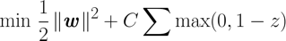
- 若 z ≥ 1，数据点正确分类，
loss = 0； - 若 z < 1，数据点误分类，
loss = 1 - z
令 z = yi * (w*xi + b)，则有
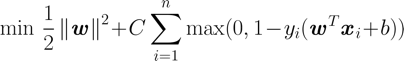
- 若
yi * (w*xi + b) ≥ 1，即约束条件满足，loss = 0； - 若
yi * (w*xi + b) < 1，即约束条件不满足时，loss = 1- yi * (w*xi + b)
为了简化上式，因为 loss 是个非负数，再令 ξi = 1 - z = 1 - yi * (w * xi + b)，软间隔 SVM 的目标函数为
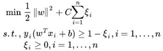 （ ξi 称作松弛变量 ）
同硬间隔 SVM 求解一样，带约束的优化问题需要构建拉格朗日函数（两种约束条件则有两乘子 α ，r，函数变量有 w，b，ξ ）
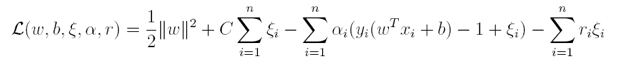
同样转换成 对偶问题 后，先求函数对各个变量的偏导令为 0，
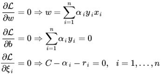
同样地，将 w 代回函数，使函数只含 α，我们发现和硬间隔 SVM 目标函数一样，但约束条件有变化（ α 多了上限）
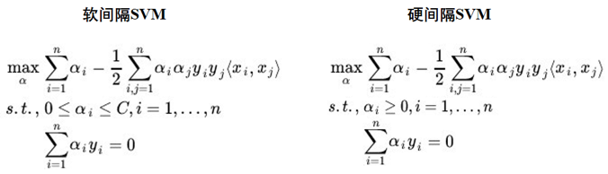
α 的求解一样也可以通过 SMO算法 ，之后就可以得到软间隔 SVM 的超平面了。另外，软间隔也可以用 Kernel 函数处理非线性数据，只要把 xi ・xj 换成 𝜅 ( xi ・xj ) 即可。
SVM 分类器优缺点
SVM 的优点
解决小样本下机器学习问题；
解决非线性问题；
无局部极小值问题（相对于神经网络等算法）；
可以很好的处理高维数据集；模型只受边界线附近的点的影响，因此对于高维数据的学习效果非常好 —— 即使维度比样本数量还要高的数据也没有问题，这是其他算法难以企及的；
该算法是结构经验最小化算法，自带正则化项（ ½ * ||w||2 ）。比较 SVM 算法和 L2 正则化可以发现，L2 正则项和 SVM 的优化目标是一样的，soft-margin SVM 的损失项和含 L2 正则化问题的优化目标 Ein 也是一样的。这么看来优化目标和约束条件在 SVM 和带 L2 正则化的问题中分别对调了。
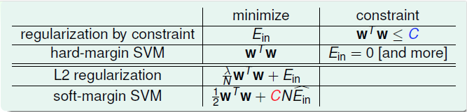
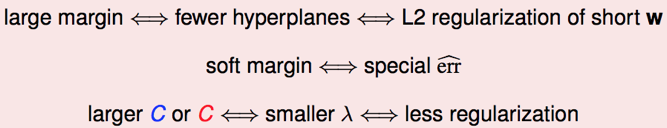
泛化能力比较强；
模型依赖的支持向量比较少，消耗的内存少；
一旦模型训练完成，预测阶段的速度非常快；
核技巧能够适用于不同类型的数据。
1）经验风险最小化：求解问题的最优解
2）结构风险最小化：正则化（在经验风险最小化基础上加上表示模型复杂度的正则化项）
SVM 的缺点
对于核函数的高维映射解释力不强，尤其是径向基函数；
对缺失数据敏感；
随着样本数量的增加，时间复杂度提升，计算成本高；
训练效果依赖于超参数 C 的选择，需要交叉验证来搜索，数据集大的时候，计算量也很大；
无法进行概率计算，但 scikit-learn 支持计算概率。
对比感知机：
感知机数据必须是严格线性可分的，否则（在不限制迭代次数时）算法无法收敛。
感知机的决策边界是不唯一的，而 SVM 得到的决策边界是唯一的。对于未知的数据， SVM 有更好的预测能力。
二者训练模型的方法不同，但是训练结果都是超平面（相关参数w，b）。对新数据的预测方式一样：输入（x，y），当分类函数值大于0，为 +1 类， 反之为 -1 类。
对比 Logistic 回归：
将逻辑回归中使用的 g(z) 函数从 sigmoid 变成
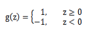
即标签从 {0，1} 变到了 {-1，1} 。并且，假设函数用 w，b 表示： h𝜽 (x) = g (𝜽Tx) → hw,b(x) = g (b + wTx)
- SVM考虑 局部最大化，强调让靠近中间线的点尽可能的远离中间线;
- Logistic考虑 全局最大化，强调所有点都尽可能的远离超平面，使所有点都被尽可能的分类。
两种方法都是常见的分类算法
从目标函数来看，逻辑回归采用的是logistical loss，svm采用的是hinge loss。这两个损失函数的目的都是增加对分类影响较大的数据点的权重，减少与分类关系较小的数据点的权重。SVM只考虑support vectors（和分类最相关的少数点）。逻辑回归通过非线性映射，大大减小了离分类平面较远的点的权重，相对提升了与分类最相关的数据点的权重。两者的根本目的都是一样的。
两个方法都可以增加不同的正则化项。所以在很多实验中，两种算法的结果是很接近的。逻辑回归模型更简单，特别是大规模线性分类时比较方便。SVM的理解和优化相对来说复杂一些，但 SVM的原问题转化为对偶问题后，分类只需要计算与少数几个支持向量的距离，当计算核函数时优势很明显。
两者对异常的敏感度也不一样。同样的线性分类情况下，如果异常点较多无法剔除时，LR中每个样本都是有贡献的，最大似然后会自动压制异常的贡献，SVM+软间隔对异常还是比较敏感，因为其训练只需要支持向量，有效样本较少，一旦被干扰，预测结果难以预料。